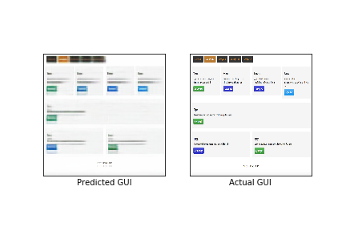
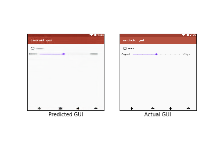
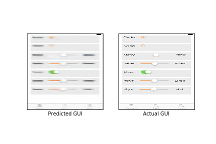
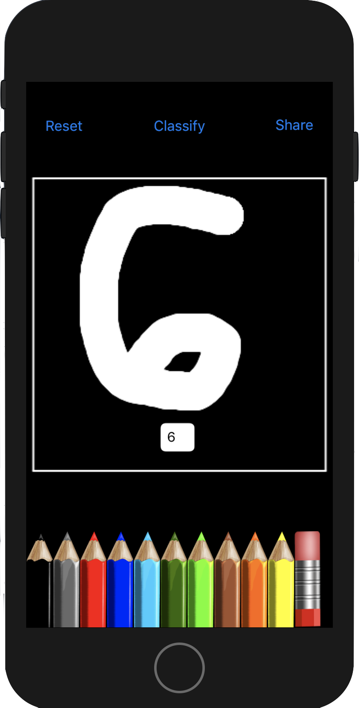

Spyglass
Search and reuse Solana code. Extracts and parses Rust functions from program source — a specific repository, or verified programs uploaded by a signer on chain.
Toy Museum
Room 01 · Foyer
Things I built that I still think are cool.
Manhattan Beach, CA
Please touch the exhibits. Cursor leaves ink.
Room 02 · 2018 · Jupyter · 141 stars
A differentiable compiler: textual GUI descriptions become pixels. Built with Uizard and Berkeley SUSA (Statistics Undergraduate Student Association).




Room 03 · Devpost
Handwritten notes compile to LaTeX. Select a stretch of math and Wolfram plots it. No public GitHub — the exhibit lives on Devpost.

Room 04 · iOS + Flask · CoreML
Visually build a net on your phone, train it on a Flask server, deploy as CoreML. Graph Builder on the left; a drawn 6 predicted as 6 on the right.


Room 05 · Devpost
Grok turns the last 7 days of X into a spoken podcast. Devpost only.
The timeline in these shots is a Devpost product demo (Anitej Thamma), not Noah’s feed.

Room 06 · Cabinet
Two smaller pieces, still on the shelf.
Search and reuse Solana code. Extracts and parses Rust functions from program source — a specific repository, or verified programs uploaded by a signer on chain.
Topological data analysis of state space for trained and untrained agents in LunarLander.